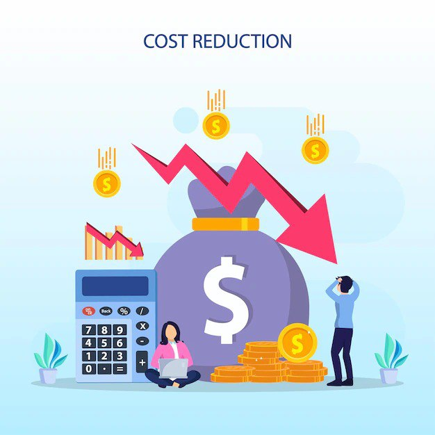

В современном цифровом мире отрасль логистики важна для бизнес-ландшафта. В связи с быстрым развитием нашего мира и растущей потребностью в логистических услугах данная отрасль смотрит в будущее процессов, оптимизированных в цифровой форме. Преимущества искусственного интеллекта и автоматизация революционизируют индустрию логистики и способствуют ее улучшению.
В настоящее время все логистические компании имеют облачные базы данных, которые позволяют им получать доступ к данным клиентов и заказов в течение нескольких секунд. Теперь логистические компании могут более эффективно управлять повседневной деятельностью, включая доступность, затраты, мониторинг потоков и ресурсов, транспортировку, укомплектование персоналом и поставщиков, чтобы обеспечить безупречные процессы и лучшее обслуживание клиентов. Преимущества искусственного интеллекта в логистической отрасли являются возможностью предоставления лучшего обслуживания клиентов.
Внедрение ИИ и автоматизации может оказать существенное влияние на повышение безопасности труда в логистической отрасли. Искусственный интеллект и автоматизация могут снизить риск получения травм на операционном уровне на складе цепочки поставок, избавляя работников от опасных рабочих процедур. Например, робот для упаковки и укладки на поддоны может исключить риск получения травмы при выполнении промышленных задач по укладке на поддоны, таких предметов, как тяжелые ящики.
С помощью искусственного интеллекта логистические компании могут более эффективно управлять всеми процессами цепочки поставок с помощью упреждающей системы логистики. Также искусственный интеллект, внедренный в логистических компаниях, приводит к улучшению процесса управления и анализа огромных объемов данных. Системы отслеживания в режиме реального времени, системы упреждающей логистики и возможность управлять большими объемами данных в течение нескольких секунд приводят к более быстрой доставке, меньшему количеству человеческих ошибок и потерянных или ошибочно доставленных заказов, а также к повышению удовлетворенности клиентов.
Внедрение ИИ и автоматизации в сфере логистики может оказать огромное влияние на снижение затрат. Благодаря ИИ, который позволяет лучше управлять данными, что приводит к повышению точности всех процессов, логистические компании будут сталкиваться с меньшим количеством ошибок, которые могут стоить им денег. С помощью автоматизации процессов уменьшается потребность в людях, поэтому компании могут завершить все свои бизнес-процессы с меньшим количеством сотрудников, что приводит к экономии денежных средств.